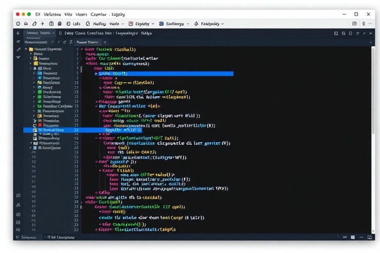

Architecture Guide. This is demonstration writing for the portfolio template, not published editorial work. Replace it with your own article before publishing.
The Notebook to Production Abyss
Data science research typically concludes with a Jupyter notebook that loads a 4GB model checkpoint into GPU memory and runs sequential inference on batch arrays. When deploying that model into a high-concurrency microservice, naive Python HTTP servers (like Flask or synchronous FastAPI) collapse under concurrent thread contention.
Production model serving requires dedicated inference engines that manage GPU memory transfers, concurrent model instances, dynamic request batching, and hardware-accelerated kernels.
Dynamic Request Batching with NVIDIA Triton
NVIDIA Triton Inference Server sits directly between your network edge and the physical GPUs. Its dynamic batcher aggregates individual incoming HTTP/gRPC requests within a configurable time window (e.g., 2ms) and passes a consolidated tensor into the accelerator.
This achieves the throughput advantages of batch processing while preserving strict sub-15ms single-request latency guarantees.
Orchestrating Complex Pipelines with Ray Serve
Real-world workflows rarely consist of a single isolated model. They require preprocessing text, tokenization, vector search retrieval, neural scoring, and post-inference business rule filters.
Ray Serve excels as the orchestration fabric, managing heterogeneous deployments where CPU-heavy feature transforms scale independently from GPU-bound Triton inference containers.
Key takeaways
- Decouple CPU-heavy feature preprocessing from GPU-bound neural inference layers.
- Leverage Triton's dynamic request batching to maximize accelerator saturation without latency degradation.
- Compile model weights to TensorRT and ONNX formats to unlock hardware-specific kernel optimizations.
- Expose granular Prometheus metrics for model queue latency, inference duration, and GPU memory utilization.